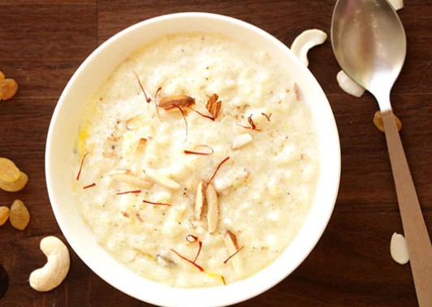
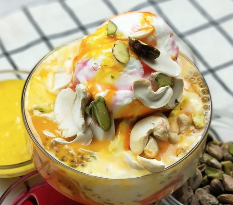

Pakistani Food: Curries & Stews
Phirni
Phirni is a thick and creamy sweet dish of Pakistan. It is a traditional Pakistani food
that is served on special occasions. Phirni is a rice pudding with rice, milk, and
sugar as the main ingredients and garnished with pistachios and almonds.
You can enjoy this protein and calcium-enriched dessert from popular
sweet shops and milk shops.

Discounted Price: Rs.300 Rs.280
Falooda
Falooda is a sweet dish in Pakistan made of milk, vermicelli, and sugar.
It is a creamy dessert with a floral aroma and aroma, served with Kulfi (dairy ice cream).
Falooda also contains basil seeds, which make it a perfect cold dessert to beat the heat of summer.

Discounted Price: Rs.250 Rs.220